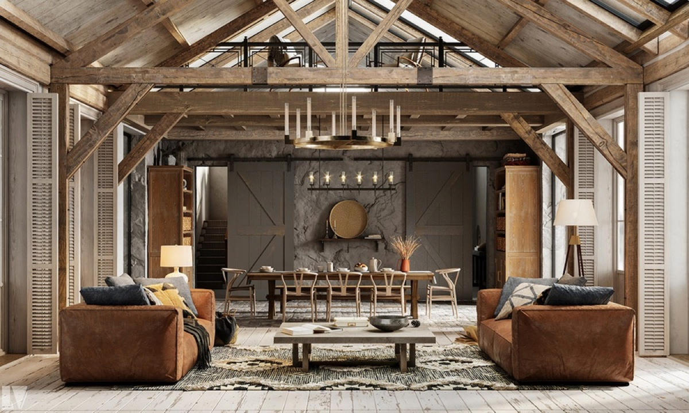
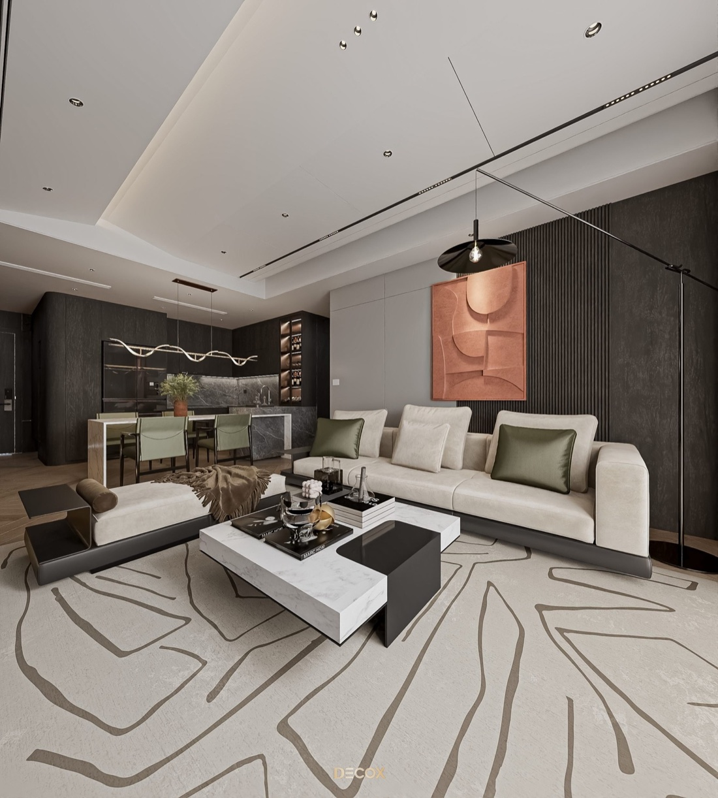
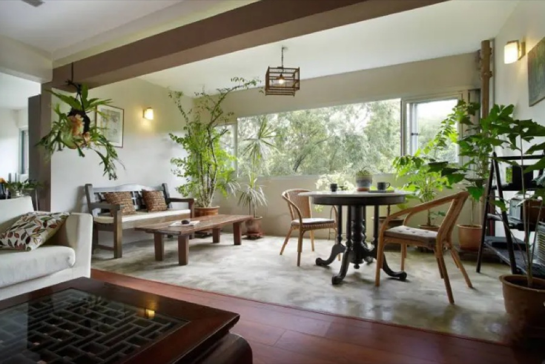
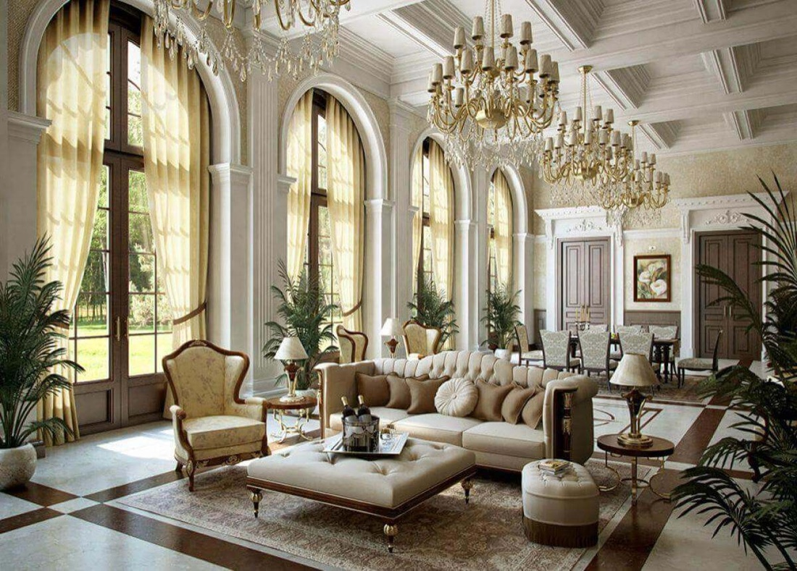
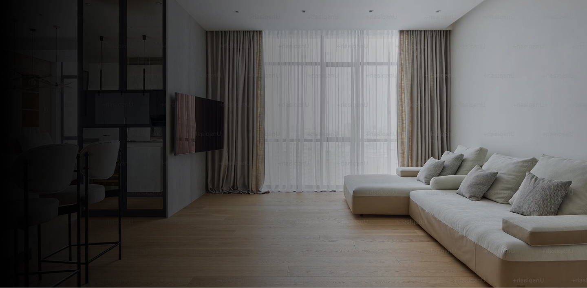

Phong cách rustic: sự mộc mạc trong thiết kế nội thất
Khi nghệ thuật trở thành một phần của phong cách sống đương đại
Dự án

THE MANSIONBiệt thự - Thủ Đức
Phong cách Contemporary: Nghệ thuật của sự linh hoạt
Khi nghệ thuật trở thành một phần của phong cách sống đương đại

